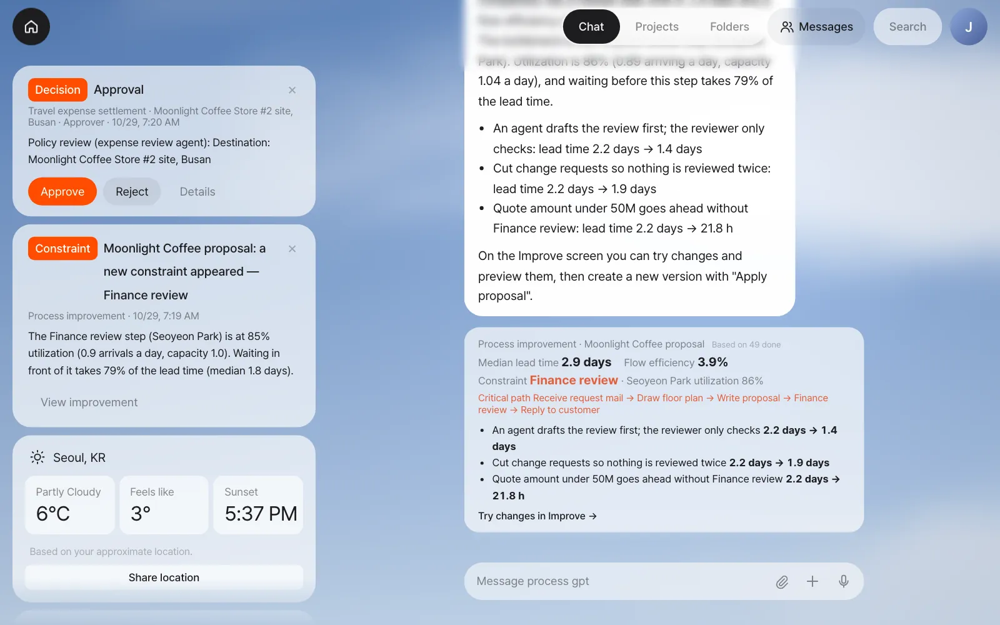
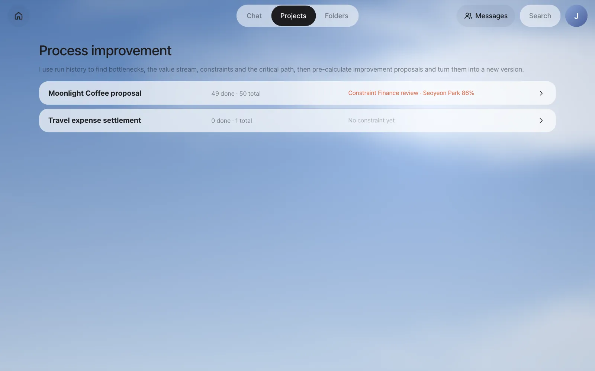
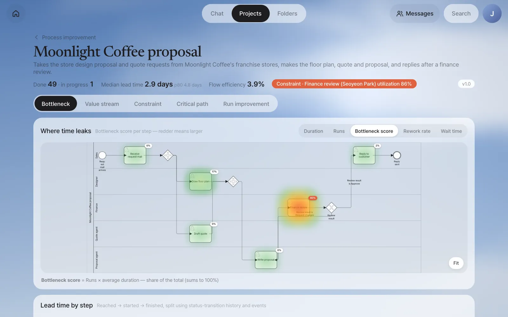
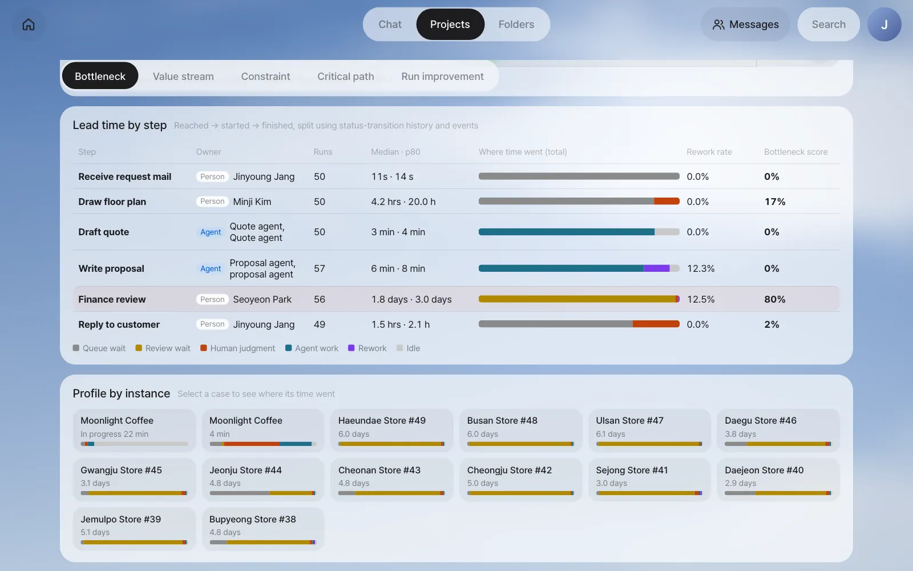
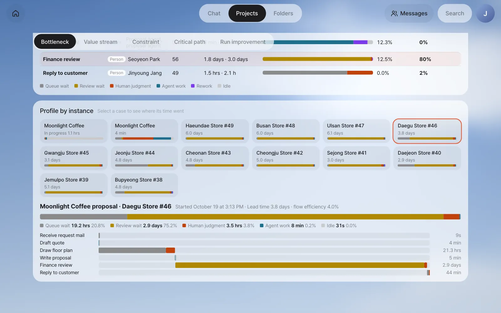
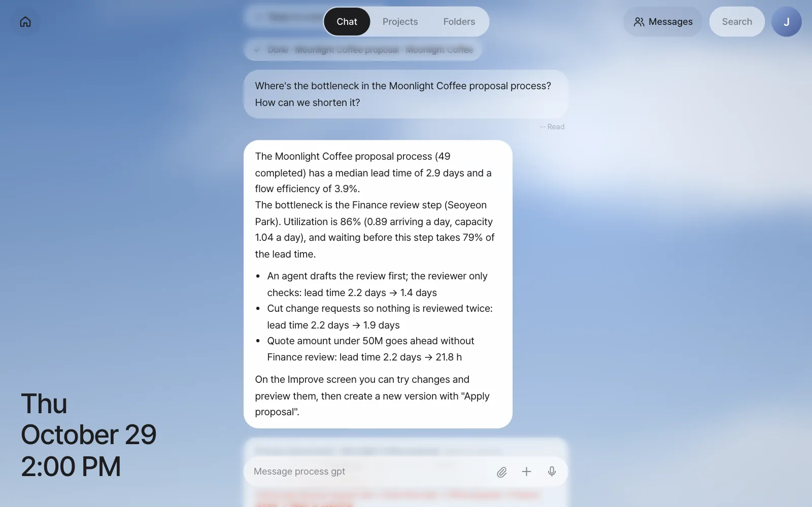

The formal process Moonlight Coffee proposal ran 50 times in three months. With those records, you'll break down by step where each case's lead time went, find the bottleneck with a BPMN heat map, look into a single case, and then ask the assistant in plain words.
The story — "Your replies take too long"#
Whether you made it by chatting in Chapter 17 or found it by mining in Chapter 19, a formal process records the start and end time of every step each time it runs. In Part 6 you practice with three months of records from the formal process Moonlight Coffee proposal. Each time Moonlight Coffee added a franchise store, three or four requests a week came in, and in October it went past five. Then the Moonlight Coffee contact says, "It takes far too long from our request to your reply."
Team lead Jinyoung Jang has a hunch about where it's slow. But she wants to see in numbers "where the work waits", not "who is slow." In this chapter you produce those numbers. In the next one, Chapter 21, you'll use them to read the whole flow and its constraint, and in Chapter 22 you'll calculate what to change in advance and then actually change it.
The example data in this chapter
The Moonlight Coffee proposal in Part 6 is an example process with simpler steps than the one you made in Chapter 17 (see the table below). It has 49 cases completed from early August to late October. 48 of them are example history loaded in exactly the shape of the records the process engine leaves, and 1 (Seoul Forest Store #52) was actually run from start to finish with the Jinyoung Jang, Minji Kim and Seoyeon Park accounts. One case in progress (Gwanghwamun Store #53) is also actually running. Cases started through the engine in English are named after their first start-form value, so these two real cases show up as Moonlight Coffee on the screens. All numbers are calculated from these records. An admin who can work in the server folder can load these records and the Jinyoung Jang, Minji Kim and Seoyeon Park accounts (pro-en-jinyoung, pro-en-minji and pro-en-seoyeon@uengine.org) with the practice-data script that comes with Lite: node server/scripts/seed-improve-demo.mjs --lang en (with the install bundle, from the install/ folder: docker compose exec -w /app/server server node scripts/seed-improve-demo.mjs --lang en --tenant lite). --lang en loads the English names into the English demo tenant (en-demo); --tenant names another tenant, such as the install bundle's lite. If you can't use the script, read along with the screenshots and the numbers in the tables.
| Step | Owner | What it does |
|---|---|---|
| Receive request mail | Jinyoung Jang (person) | Sums up the store, area and budget from the request email and starts the process |
| Draw floor plan | Minji Kim (person) | The store floor plan and the area of each room |
| Draft quote | Quote agent | A draft quote from the area and budget (at the same time as the floor plan) |
| Write proposal | Proposal agent | A proposal summary from the floor plan and the quote |
| Finance review | Seoyeon Park (person) | Checks amounts and terms. Approves or requests changes (→ back to Write proposal) |
| Reply to customer | Jinyoung Jang (person) | Replies with the proposal and quote attached |
Where does the lead time go?#
Lead time is the time from when work comes in until it's finished. It's exactly the time the customer feels. But within the lead time, the time someone is actually working on it is shorter than you'd think. Most of it is waiting.
Process GPT Lite splits the time a step took into six segments.
| Segment | From → to | Example |
|---|---|---|
| Queue wait | The step is reached → the owner first touches it | A floor plan request is sitting in front of Minji Kim, but she hasn't opened it yet |
| Review wait | Until a person opens an output an agent made | Until Seoyeon Park opens the proposal the proposal agent finished |
| Human judgment | From a person opening it to submitting it | Seoyeon Park checks the quote and approves it |
| Agent work | The time an agent actually ran | The 2–3 minutes the quote agent spends writing the draft quote |
| Rework | Work on the same step of the same case the second time or later | Rewriting the proposal after a change request, and reviewing it again |
| Idle | Gaps that belong to none of the above | The few seconds before an agent picks up the work |
This split carries over the rules from Process GPT's analytics service as is. Times are read from only two records: the times a work item's status changed (to-do → in progress → submitted → done) and the event times the agent left. The moment the owner first opens a work item counts as the start, so time spent with a to-do waiting but unopened counts as waiting, not work.
Why review wait is counted separately
Once you bring in agents, making things takes only minutes. The wait until a person checks the result then easily becomes the new bottleneck. That's why "the time an agent's output waited for a person" is counted on its own.
Five measures for reading a bottleneck#
The heat map on the screen colors each step by one of the measures below. The redder, the larger.
| Measure | How it's calculated | What it tells you |
|---|---|---|
| Duration | Median time from reaching the step until it ends (waiting included) | How long a case usually stays in this step |
| Runs | The number of cases that went through this step (including repeats after change requests) | How often work passes through |
| Bottleneck score | Runs × average duration as a share of the total (adds up to 100%) | This step's share of all the time the process used |
| Rework rate | (repeats ÷ all cases) × 100 | The share that isn't done in one pass |
| Wait time | Median of reached → started (queue wait + review wait) | How long work waits for people |
The median is the middle value when you line the values up by size. Unlike the average, a few unusually long cases don't pull it, so you use it to talk about the "usual" case. For the slow cases, look at the p80 as well (the 80th of 100 cases).
Try it#
1. Open it from the notification#
Sign in as Jinyoung Jang, and a Constraint notification is waiting on Home. When a new bottleneck (constraint) shows up in a process, the process owner is notified once. The call is made by rules (utilization of 75% or more, or waiting at 40% or more of the lead time). Click View improvement on the notification.

The notification was sent when the history was loaded, so it still says 85%. The Improve screen recalculates with every finished step, and after the two real cases it shows 86%.
Even without the notification, you can click Projects at the top and then Improve analysis → next to Process in the list on the left. Processes with run records appear; pick Moonlight Coffee proposal.

2. Find the bottleneck with the heat map#
At the top of the Improve screen you see the number completed (Done 49 · in progress 1), a median lead time of 2.9 days (p80 4.8 days), a flow efficiency of 3.9%, and a red Constraint label. Flow efficiency and the constraint are covered in Chapter 21.
If your numbers are a little different
The practice data is made for the three months up to the day you load the seed, so the numbers on your screen may differ slightly from the ones in this chapter. Which step is the bottleneck stays the same.
The diagram in the Bottleneck tab is the BPMN made at registration, unchanged, and the glow behind each step shows the size of the selected measure.

| Step | Bottleneck score | How to read it |
|---|---|---|
| Finance review | 80% | Most of the time the whole process used went here |
| Draw floor plan | 17% | Second. A step a person draws by hand |
| Reply to customer | 2% | |
| Draft quote · Write proposal | 0% | Agents finish in minutes |
At the top right, switch the measure to Wait time. Finance review is still the reddest. It means this step waits longer than it works.
3. Lead time by step#
Scroll down and you see, as bars, where each step's time went. The bar colors are the six segments above.

| Step | Runs | Median · p80 | Median wait | Median work | Rework rate |
|---|---|---|---|---|---|
| Draw floor plan | 50 | 4.2 hrs · 20.0 hrs | 2.5 hrs | 1.6 hrs | 0% |
| Draft quote | 50 | 3 min · 4 min | 0s | 3 min | 0% |
| Write proposal | 57 | 6 min · 8 min | 0s | 5 min | 12.3% |
| Finance review | 56 | 1.8 days · 3.0 days | 1.8 days | 45 min | 12.5% |
| Reply to customer | 49 | 1.5 hrs · 2.1 hrs | 1.1 hrs | 22 min | 0% |
In Finance review, Seoyeon Park actually spends 45 minutes looking at it, but before that it waits 1.8 days. The bar is almost all yellow (review wait) because the previous step is the proposal agent, so it's an agent's output waiting for a person. 7 cases went back with a change request and passed through Write proposal and Finance review once more: Write proposal has 57 runs (50 cases + 7 repeats, a 12.3% rework rate) and Finance review 56 (49 + 7, 12.5%), because the case in progress hasn't finished its Finance review yet. Receive request mail, Draw floor plan and Draft quote show 50 because that case has already been through them. (The median and p80 columns are on the screen; the median wait and work come from the same calculation, shown as Waiting and Work in the Run improvement tab of Chapter 22.)
This isn't a screen for finding slow people
Seoyeon Park's judgment time is short, 45 minutes per case. What grows long is the waiting. Waiting usually comes not from how hard people work but from the gap between how much work comes in and how much can be handled. You'll look at that gap with the theory of constraints in Chapter 21.
4. Look into one case — the instance profile#
Click a case under Profile by instance to see where that case's time went. The top bar is the breakdown for the whole case, and below it is what happened in each step, from when to when.

The bars add up to exactly that case's lead time. Segments that ran at the same time, like Draw floor plan and Draft quote, aren't counted twice: each moment goes into only one segment, in the order human judgment → agent work → rework → review wait → queue wait. So time never "disappears or gets counted twice."
5. Ask the assistant#
You can also ask in chat.
Where's the bottleneck in the Moonlight Coffee proposal process? How can we shorten it?
The assistant runs the same calculation as above, answers with those numbers, and attaches a card that takes you to the Improve screen.

The numbers come from calculation, the words from the model
Numbers like bottleneck, utilization and lead time are all calculated from the records; the AI model only receives those numbers and explains them. If the model doesn't answer within 25 seconds, the same numbers are shown in fixed sentences (the picture above is such a case). The same calculation is also available as a tool agents use, so agents take the numbers from it instead of making them up.
Summary#
| Question | Where to look | Answer in this example |
|---|---|---|
| What's the lead time? | The numbers at the top of the screen | Median 2.9 days, p80 4.8 days |
| Which step uses the most time? | Bottleneck score heat map | Finance review (80%) |
| Is that step working or waiting? | Lead time by step | Judgment 45 min, wait before it 1.8 days |
| Is it done in one pass? | Rework rate | 12.5% go back with a change request |
You've found that Finance review is the bottleneck. In the next chapter you'll step back, map the time worked and the time waited across the whole flow on one page, and confirm with numbers why the step that sets the overall speed (the constraint) is Finance review (Chapter 21).
Check your understanding
- Draw floor plan has a median duration of 4.2 hours but a p80 of 20.0 hours. What does the gap between these two numbers mean?
- Why was the wait for Finance review counted as "review wait" and not "queue wait"?
- Why isn't the bottleneck score set by "duration" alone, but multiplied by the number of runs? Explain by comparing a step that takes 3 days once a year with a step that takes two hours every day.
Answer
- It usually finishes within half a day, but one case in five takes close to a day. Requests Minji Kim gets in the afternoon often roll over to the next day, so the tail of slow cases is long.
- Because the step right before Finance review (Write proposal) is an agent. The time an output an agent finished waits for a person is counted separately as review wait.
- The bottleneck score is the step's share of all the time the process used. Three days once a year adds up to 3 days, while two hours every day adds up to hundreds of hours a year, so the second uses far more of the total time. A small delay in a step that work passes through often can become a big bottleneck.